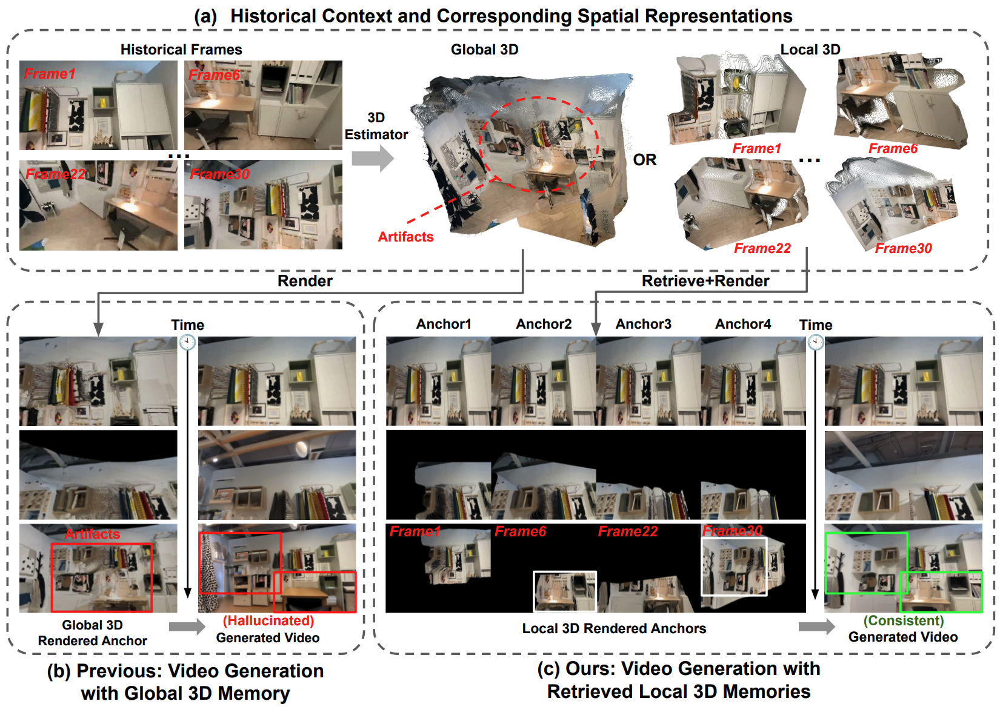
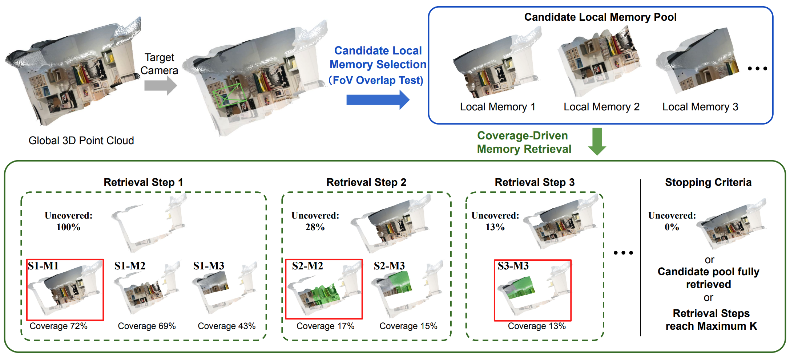
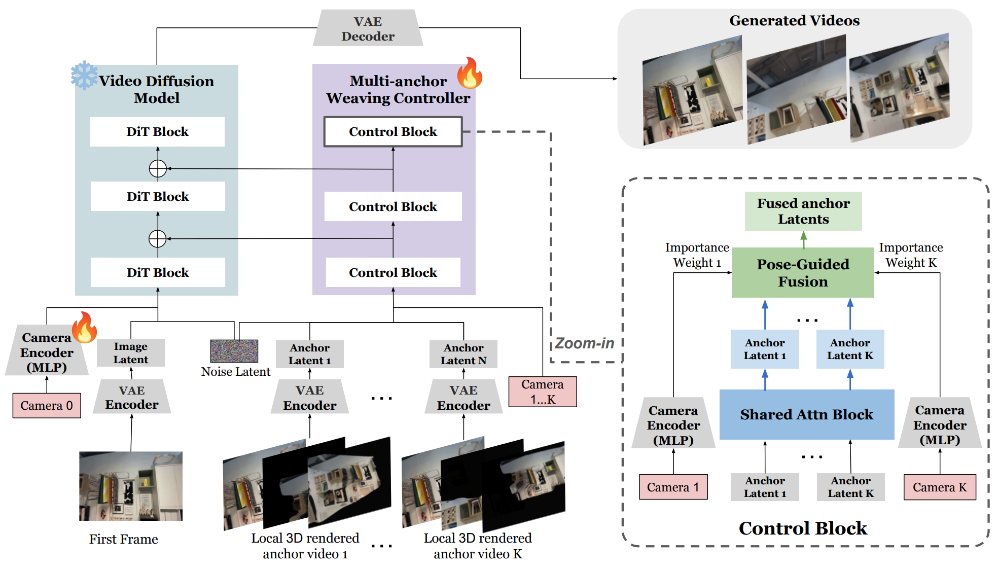

Global 3D reconstruction accumulates cross-view misalignment, introducing artifacts in the reconstructed geometry ((a), middle), which propagate to the generated video as hallucinations ((b), red boxes).
In contrast, per-frame local geometry inherently avoids cross-view misalignment and therefore remains clean ((a), right).
Conditioning on multiple retrieved local geometric anchors, AnchorWeave maintains strong spatial consistency with the historical frames ((c), white and green boxes).
Coverage-driven memory retrieval pipeline

Given a target camera, we first select local memories whose camera FoVs partially overlap with the target camera view to form a candidate memory pool. At each retrieval step, we greedily select the memory that maximizes the newly covered visible area.
Points invisible to the target camera are shown in gray.
Si–Mj denotes memory j selected at retrieval step i, and the red box indicates the retrieved memory.
In Si-Mj, regions already covered by previously retrieved memories are highlighted in green and only newly covered regions retain their original RGB colors. No green regions appear in S1-Mj since 1st-step's coverage is empty.
Retrieval terminates when the uncovered region is 0%, the retrieval budget K is exhausted, or the remaining memory pool is empty. For clarity, coverage is computed with a single frame here, while in practice is aggregated over multiple frames per chunk.
Architecture of multi-anchor weaving controller

Anchors are encoded and jointly processed by a shared attention block, followed by camera-pose-guided fusion to produce a unified control signal injected into the backbone model. Camera 1 to K represent the retrieved-to-target camera poses for the 1 to K anchor videos, where each denotes the relative pose between the camera associated with a retrieved local point cloud and the target camera, measuring their viewpoint proximity. Camera 0 is the relative target camera trajectory.